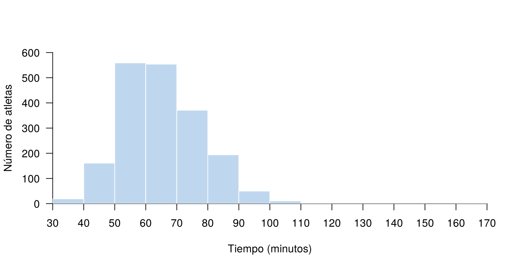

Las tablas de frecuencia resumen una variable: muestran qué valores
aparecen y cuántas veces. Son una herramienta fundamental para tener una
primera impresión de los datos, y también para identificar errores de
digitación y datos faltantes (NA).
En esta página se usan las bases CarreraLuz22 y
vivienda_faltantes, del paquete
paqueteMETODOS.
library(paqueteMETODOS)
data("CarreraLuz22")
data("vivienda_faltantes")Los bloques de código de esta página se ejecutan en orden, porque algunos usan objetos creados en bloques anteriores.
Antes de analizar una variable conviene contar sus valores. La
función table() muestra las categorías, y el argumento
useNA = "ifany" agrega los datos faltantes, si los hay:
table(vivienda_faltantes$tipo, useNA = "ifany")
Apartamento APARTAMENTO apto casa Casa CASA
5032 61 13 14 3195 12
<NA>
3 La tabla muestra un problema: la misma categoría aparece escrita de
varias maneras, como CASA, Casa y
casa. Además, hay 3 datos faltantes. Si no se corrige, se
analizarían seis categorías en lugar de dos.
Para unificar las categorías se pasa todo a minúsculas con
tolower() y se reemplaza apto:
tipo <- tolower(vivienda_faltantes$tipo)
tipo[tipo == "apto"] <- "apartamento"
table(tipo, useNA = "ifany")tipo
apartamento casa <NA>
5106 3221 3 Suponga que una variable tiene \(k\) valores o categorías distintas y que hay \(n\) datos. Una tabla de frecuencias tiene las siguientes columnas:
| Símbolo | Nombre | Fórmula | Qué indica |
|---|---|---|---|
| \(x_i\) | Valor o clase | Cada valor o categoría de la variable | |
| \(n_i\) | Frecuencia absoluta | Cuántos datos hay en el valor \(i\) | |
| \(f_i\) | Frecuencia relativa | \(f_i = \dfrac{n_i}{n}\) | Qué proporción representa el valor \(i\) |
| \(N_i\) | Frecuencia absoluta acumulada | \(N_i = \displaystyle\sum_{j=1}^{i} n_j\) | Cuántos datos hay hasta el valor \(i\) |
| \(F_i\) | Frecuencia relativa acumulada | \(F_i = \dfrac{N_i}{n}\) | Qué proporción de datos hay hasta el valor \(i\) |
La frecuencia relativa se expresa como proporción o como porcentaje, al multiplicarla por 100. Estas frecuencias cumplen las siguientes propiedades:
\[ \sum_{i=1}^{k} n_i = n \qquad \sum_{i=1}^{k} f_i = 1 \qquad N_k = n \qquad F_k = 1 \]
Las columnas que se incluyen dependen del tipo de variable:
| Tipo de variable | Orden de las filas | Columnas |
|---|---|---|
| Cualitativa nominal | A criterio de quien analiza | \(x_i\), \(n_i\), \(f_i\) |
| Cualitativa ordinal | Respeta la jerarquía de la variable | \(x_i\), \(n_i\), \(f_i\), \(N_i\), \(F_i\) |
| Cuantitativa discreta | De menor a mayor | \(x_i\), \(n_i\), \(f_i\), \(N_i\), \(F_i\) |
| Cuantitativa continua | Clases de menor a mayor | Clase, marca de clase, \(n_i\), \(f_i\), \(N_i\), \(F_i\) |
En una variable nominal no se acumula, porque sus categorías no tienen orden.
Esta función construye la tabla completa, y se usará en los siguientes ejemplos:
tabla_frecuencias <- function(x) {
ni <- as.vector(table(x))
Ni <- cumsum(ni)
n <- sum(ni)
data.frame(valor = names(table(x)),
ni = ni,
fi = round(100 * ni / n, 2),
Ni = Ni,
Fi = round(100 * Ni / n, 2))
}Basta con entregarle una variable. Por ejemplo, para la categoría de los atletas, que es ordinal, se usan todas las columnas:
tabla_frecuencias(CarreraLuz22$categoria) valor ni fi Ni Fi
1 1. Juvenil 19 0.99 19 0.99
2 2. Abierta 1179 61.34 1198 62.33
3 3. Veteranos A 423 22.01 1621 84.34
4 4. Veteranos B 227 11.81 1848 96.15
5 5. Veteranos C 74 3.85 1922 100.00Para el sexo de los atletas, que es nominal, se dejan las tres primeras columnas, porque no se acumula:
tabla_frecuencias(CarreraLuz22$sex)[, 1:3] valor ni fi
1 Hombre 1178 61.29
2 Mujer 744 38.71Lo mismo se hace con la zona de las viviendas. La función omite los datos faltantes:
tabla_frecuencias(vivienda_faltantes$zona)[, 1:3] valor ni fi
1 Zona Centro 124 1.49
2 Zona Norte 1922 23.08
3 Zona Oeste 1204 14.46
4 Zona Oriente 351 4.22
5 Zona Sur 4726 56.76Con una variable numérica, como el estrato, cada valor forma una fila:
tabla_frecuencias(vivienda_faltantes$estrato) valor ni fi Ni Fi
1 3 1453 17.45 1453 17.45
2 4 2131 25.59 3584 43.04
3 5 2751 33.04 6335 76.08
4 6 1992 23.92 8327 100.00Por ejemplo, estos son los 32
equipos del Mundial de Catar 2022 por confederación. Primero se
crean los datos y después se calcula la frecuencia relativa con
prop.table():
confederacion <- c("África (CAF)", "Asia (AFC)", "Europa (UEFA)",
"Norte y Centroamérica (CONCACAF)", "Oceanía (OFC)",
"Suramérica (CONMEBOL)")
ni <- c(5, 6, 13, 4, 0, 4)
fi <- 100 * prop.table(ni)
mundial <- data.frame(Confederación = confederacion, ni = ni, `fi (%)` = round(fi, 2),
check.names = FALSE)
sum(ni)[1] 32| Confederación | ni | fi (%) |
|---|---|---|
| África (CAF) | 5 | 15.62 |
| Asia (AFC) | 6 | 18.75 |
| Europa (UEFA) | 13 | 40.62 |
| Norte y Centroamérica (CONCACAF) | 4 | 12.50 |
| Oceanía (OFC) | 0 | 0.00 |
| Suramérica (CONMEBOL) | 4 | 12.50 |
Europa tuvo la mayor participación, con 13 equipos, que equivalen al 40.6 % del total. Le siguen Asia, con 18.8 %, y África, con 15.6 %.
El estrato socioeconómico es ordinal, por eso las filas siguen su jerarquía y se pueden acumular las frecuencias. Los 3 datos faltantes no se incluyen en el cálculo:
estrato <- tabla_frecuencias(vivienda_faltantes$estrato)| Estrato | ni | fi (%) | Ni | Fi (%) |
|---|---|---|---|---|
| 3 | 1453 | 17.45 | 1453 | 17.45 |
| 4 | 2131 | 25.59 | 3584 | 43.04 |
| 5 | 2751 | 33.04 | 6335 | 76.08 |
| 6 | 1992 | 23.92 | 8327 | 100.00 |
El estrato 5 es el más frecuente, con 33.04 % de las viviendas. Además, el 43.04 % de las viviendas está en los estratos 3 o 4.
Si una variable discreta tiene pocos valores distintos, cada valor forma una fila. Por ejemplo, el número de habitaciones:
habitaciones <- tabla_frecuencias(vivienda_faltantes$habitac)| Habitaciones | ni | fi (%) | Ni | Fi (%) |
|---|---|---|---|---|
| 0 | 66 | 0.79 | 66 | 0.79 |
| 1 | 59 | 0.71 | 125 | 1.50 |
| 2 | 927 | 11.13 | 1052 | 12.63 |
| 3 | 4101 | 49.25 | 5153 | 61.88 |
| 4 | 1731 | 20.79 | 6884 | 82.67 |
| 5 | 680 | 8.17 | 7564 | 90.84 |
| 6 | 318 | 3.82 | 7882 | 94.66 |
| 7 | 173 | 2.08 | 8055 | 96.73 |
| 8 | 138 | 1.66 | 8193 | 98.39 |
| 9 | 83 | 1.00 | 8276 | 99.39 |
| 10 | 51 | 0.61 | 8327 | 100.00 |
El valor más frecuente es 3 habitaciones, con 49.25 % de las viviendas, y el 82.67 % tiene 4 habitaciones o menos.
Una variable continua tiene muchos valores distintos, por lo que se agrupa en clases, es decir, en intervalos. Los pasos son los siguientes:
Calcule el rango: \(R = x_{\max} - x_{\min}\).
Elija el número de clases \(k\). La regla de Sturges es una guía inicial:
\[ k \approx 1 + \log_2(n) \]
Calcule la amplitud: \(c = \dfrac{R}{k}\). Se suele redondear a un valor fácil de leer.
Defina los límites de cada clase, de modo que todos los datos queden en una sola clase.
Calcule la marca de clase, que es el punto medio de la clase: \(m_i = \dfrac{L_{i-1} + L_i}{2}\).
Cuente los datos de cada clase y calcule las frecuencias.
Para los tiempos de la carrera, en minutos:
tiempo <- CarreraLuz22$timerun / 60
n <- length(tiempo)
rango <- max(tiempo) - min(tiempo)
k <- nclass.Sturges(tiempo)
c(n = n, rango = rango, k = k, amplitud = rango / k) n rango k amplitud
1922.000 132.900 12.000 11.075 La amplitud obtenida se redondea a 10 minutos, porque es más fácil de leer. Como casi todos los tiempos están por debajo de 120 minutos y el máximo es de 166, la última clase queda abierta.
La función cut() asigna cada dato a su clase. Por
defecto, cada clase incluye su límite superior: \((L_{i-1},\ L_i]\).
limites <- c(seq(30, 120, by = 10), Inf)
clases <- cut(tiempo, breaks = limites)
carrera <- tabla_frecuencias(clases)
carrera$marca <- c(seq(35, 115, by = 10), NA)
carrera$valor[nrow(carrera)] <- "Más de 120"| Tiempo (minutos) | Marca de clase | ni | fi (%) | Ni | Fi (%) |
|---|---|---|---|---|---|
| (30,40] | 35 | 19 | 0.99 | 19 | 0.99 |
| (40,50] | 45 | 161 | 8.38 | 180 | 9.37 |
| (50,60] | 55 | 559 | 29.08 | 739 | 38.45 |
| (60,70] | 65 | 554 | 28.82 | 1293 | 67.27 |
| (70,80] | 75 | 371 | 19.30 | 1664 | 86.58 |
| (80,90] | 85 | 194 | 10.09 | 1858 | 96.67 |
| (90,100] | 95 | 50 | 2.60 | 1908 | 99.27 |
| (100,110] | 105 | 11 | 0.57 | 1919 | 99.84 |
| (110,120] | 115 | 2 | 0.10 | 1921 | 99.95 |
| Más de 120 | 1 | 0.05 | 1922 | 100.00 |
La clase más frecuente es la de 50 a 60 minutos, con 29.08 % de los atletas, y el 67.27 % terminó en 70 minutos o menos.
El histograma es el gráfico de una tabla de frecuencias con clases: cada barra corresponde a una clase, y su altura, a la frecuencia. Los ejes se definen para que contengan todas las barras:
cortes <- seq(30, 170, by = 10)
hist(tiempo, breaks = cortes, col = "#BFD7EE", border = "white", las = 1,
xlim = range(cortes), ylim = c(0, 600), xaxp = c(30, 170, 14),
xaxs = "i", yaxs = "i", main = "",
xlab = "Tiempo (minutos)", ylab = "Número de atletas")
Histograma de los tiempos de la carrera La Luz 2022.
La forma de la tabla y del histograma depende del número de clases.
La regla de Sturges no es la única: nclass.scott() y
nclass.FD() usan otros criterios, y en estos datos dan 38 y
49 clases, frente a 12 de Sturges. Conviene probar varias opciones y
elegir la que muestre mejor los datos.
¿Qué problema resuelve? Evita construir a mano las columnas de la tabla.
¿Qué hace? La función freq() calcula
las frecuencias absolutas, relativas y acumuladas, con y sin datos
faltantes.
¿Cómo se usa?
install.packages("summarytools") # solo la primera vez
library(summarytools)
view(freq(vivienda_faltantes$estrato))La función view() muestra la tabla con formato en el
panel Viewer de RStudio. La columna
% Valid calcula los porcentajes sin los datos faltantes, y
% Total, con ellos.
¿Cuándo usarlo? Para revisar una variable rápidamente.
¿Qué problema resuelve? Una tabla impresa en la consola no sirve para un informe.
¿Qué hace? Da formato a las tablas creadas con
knitr::kable() en un documento HTML o PDF.
¿Cómo se usa?
library(kableExtra)
tabla_sexo <- as.data.frame(table(Sexo = CarreraLuz22$sex), responseName = "ni")
kbl(tabla_sexo) |>
kable_paper(full_width = FALSE) |>
row_spec(0, bold = TRUE)| Sexo | ni |
|---|---|
| Hombre | 1178 |
| Mujer | 744 |
¿Cuándo usarlo? Para presentar tablas en informes.
¿Qué problema resuelve? En una tabla grande cuesta ver los valores más altos.
¿Qué hace? formattable
agrega colores y barras a las celdas.
¿Cómo se usa? Con los datos ficticios de varios estudiantes:
library(formattable)
estudiantes <- data.frame(
nombre = c("Juan", "Carlos", "Ana", "Luz"),
edad = c(25, 27, 31, 30),
examen = c(8.9, 9.5, 8.5, 8.6),
aprobado = c(TRUE, TRUE, FALSE, TRUE)
)
formattable(estudiantes, list(
edad = color_tile("white", "orange"),
examen = normalize_bar("pink", 0.2),
aprobado = formatter("span",
style = x ~ style(color = ifelse(x, "green", "red")),
x ~ ifelse(x, "Sí", "No"))
))| nombre | edad | examen | aprobado |
|---|---|---|---|
| Juan | 25 | 8.9 | Sí |
| Carlos | 27 | 9.5 | Sí |
| Ana | 31 | 8.5 | No |
| Luz | 30 | 8.6 | Sí |
¿Cuándo usarlo? Cuando el formato ayuda a interpretar los datos. Si no aporta, una tabla sencilla es mejor.
| Problema | Causa | Solución |
|---|---|---|
| Una categoría aparece varias veces | Está escrita de formas distintas | Unificar el texto antes de construir la tabla |
| Los datos faltantes no aparecen en la tabla | table() los omite por defecto |
Usar useNA = "ifany" |
| Las frecuencias acumuladas no tienen sentido | La variable es nominal | Acumular solo si la variable tiene orden |
| Las categorías ordinales quedan en mal orden | R las ordena alfabéticamente | Usar factor() con levels en
el orden correcto |
| Un dato queda en una clase distinta a la esperada | cut() incluye el límite superior por
defecto |
Revisar el argumento right |
cut() devuelve NA |
Hay datos fuera de los límites | Ajustar los límites o usar
include.lowest |
| Las frecuencias relativas no suman 100 % | Falta una categoría o es un efecto del redondeo | Revisar \(\sum n_i = n\) |
Una encuesta sobre el servicio de alimentación y bebidas de una aerolínea obtuvo estas respuestas: Muy regular, 12,837; Regular, 21,988; Bueno, 22,300; Muy bueno, 24,466; y Excelente, 22,313. Construya la tabla de frecuencias. ¿Qué porcentaje respondió Regular o Muy regular?
La variable es ordinal, así que se conserva el orden y se acumula:
ni <- c(12837, 21988, 22300, 24466, 22313)
respuestas <- data.frame(
nivel = c("Muy regular", "Regular", "Bueno", "Muy bueno", "Excelente"),
ni = ni,
fi = round(100 * ni / sum(ni), 2),
Ni = cumsum(ni),
Fi = round(100 * cumsum(ni) / sum(ni), 2)
)
respuestas nivel ni fi Ni Fi
1 Muy regular 12837 12.35 12837 12.35
2 Regular 21988 21.16 34825 33.52
3 Bueno 22300 21.46 57125 54.98
4 Muy bueno 24466 23.55 81591 78.53
5 Excelente 22313 21.47 103904 100.00El 33.52 % respondió Regular o Muy regular. Es el valor de \(F_2\).
Indique si tiene sentido calcular \(F_i\) en estas variables: zona de la ciudad, estrato, número de baños y barrio.
Tiene sentido en estrato y número de baños, porque sus valores tienen orden. No lo tiene en zona ni en barrio, porque son nominales: el resultado dependería del orden en que se escriban las filas.
Construya la tabla de frecuencias de tipo de
vivienda_faltantes después de unificar las categorías. ¿Qué
porcentaje de las viviendas con dato son apartamentos?
tipo <- tolower(vivienda_faltantes$tipo)
tipo[tipo == "apto"] <- "apartamento"
round(100 * prop.table(table(tipo)), 2)tipo
apartamento casa
61.32 38.68 Construya la tabla de frecuencias de edad en
CarreraLuz22, con clases de 10 años entre 10 y 80, usando
cut() y la función tabla_frecuencias(). ¿Qué
porcentaje de atletas tiene 40 años o menos?
clases_edad <- cut(CarreraLuz22$edad, breaks = seq(10, 80, by = 10))
tabla_frecuencias(clases_edad) valor ni fi Ni Fi
1 (10,20] 48 2.50 48 2.50
2 (20,30] 497 25.86 545 28.36
3 (30,40] 719 37.41 1264 65.76
4 (40,50] 397 20.66 1661 86.42
5 (50,60] 194 10.09 1855 96.51
6 (60,70] 57 2.97 1912 99.48
7 (70,80] 10 0.52 1922 100.00El porcentaje es el valor de Fi en la clase \((30, 40]\): 65.76 %.
Una tabla del Mundial de Catar 2022 registra 5, 5, 13, 4, 0 y 4 equipos por confederación. Compruebe si cumple \(\sum n_i = n\), con \(n = 32\). ¿Qué concluye?
sum(c(5, 5, 13, 4, 0, 4))[1] 31La suma es 31, así que falta un equipo. En la tabla correcta, Asia tiene 6 equipos, no 5. Por eso conviene comprobar siempre esa suma.
Última revisión: 5 de noviembre de 2026.